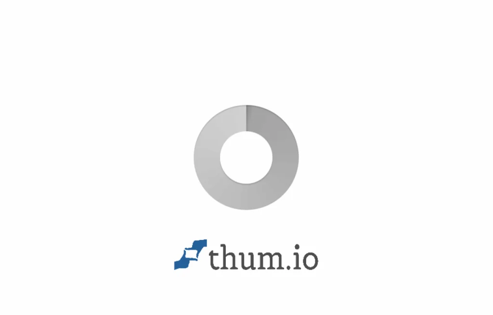

Kinetic Data
Engineering a modular design system optimized for complex platform viewports to solve visual hierarchy confusion.
The Engagement
Kinetic Data required a scalable, component-based design system to clean up their platform applications. The existing interfaces were slow to develop and confusing for enterprise customers to navigate due to inconsistent spacing, text weight, and interactive states.
The Hierarchy Trap
Enterprise platforms fail when they try to highlight everything at once. Users working with Kinetic Data were struggling with layout scanning because complex lists and user actions lacked clear visual anchors.
Complex interfaces suffer high cognitive fatigue when labels, visual paths, and borders share conflicting styles without clear visual consistency.
Standardized Grid Systems
We refined the interface layouts to prioritize basic typography and clean sizing, establishing a consistent layout spacing matrix and a curated dark obsidian palette highlighted by glossy indigo accents.
Plus Jakarta Sans
Used for primary display categories and headers to project a confident, modern visual style. Secondary text relies on Inter for high readability.
Electric Indigo (#4F46E5)
Leveraged only for active focus states, navigation highlights, and core interactive CTA anchors to guide user attention.
The Redesigned Viewports
Every screen element was rebuilt from modular components, using smooth layout boundaries to separate active options from tabular database results.
Modular Implementation
Our partnership focused on design-to-code integrity. Rather than simply delivering static design cards, we modeled active states, focus glows, and layouts inside code.
Spacing Mapping
We isolated ad-hoc styling overrides and mapped them to global spacing constants.
Token Matrix
We built global typography scales, interactive focus boundaries, and border radius variables.
Component Specs
We verified responsive layout spec configurations across multiple viewport widths.